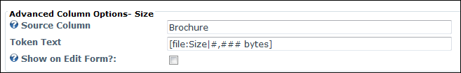
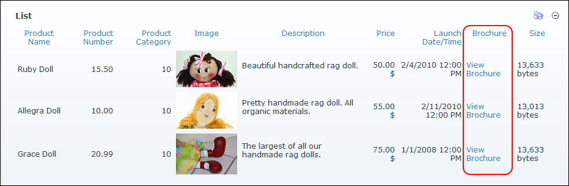

How to configure the optional Advanced Column Options for look-up columns for a form or list in the Form and List module. This tutorial assumes you are currently adding or editing a Look-Up column. See
Tip: In the below example, the Look-Up column is set to display the size of the file selected in the Brochure column.

Setting the Advanced Options for a Look-Up column

The Look-Up Column displayed in a List